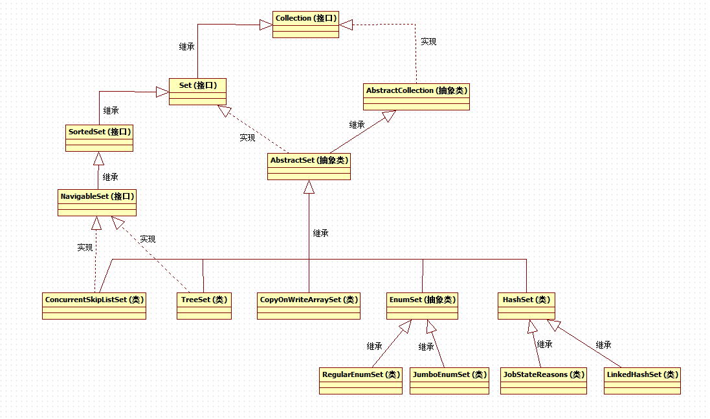

1 总览2 TreeSet2.1 API2.1.1 构造函数2.1.2 add添加元素2.1.3 其他3 EnumSet3.1 API3.2 内部原理3.2.1 RegularEnumSet3.2.2 JumboEnumSet3.2.3 性能4 HashSet4.1 内部实现4.2 子类4.2.1 LinkedHashSet4.2.2 JobStateReasons5 ConcurrentSkipListSet6 CopyOnWriteArraySet6.1 内部实现6.2 API6.2.1 add6.2.2 addIfAbsent6.2.3 addAllAbsent

TreeSet作为一个可排序的set集合，可以按照一定的排序规则对set中保存的元素进行排序。（由于TreeSet是基于TreeMap实现的，所以本章节只是简单讲解，在TreeMap中会进行详细讲解）
xpublic TreeSet() {this(new TreeMap<E,Object>());}public TreeSet(Comparator<? super E> comparator) {this(new TreeMap<>(comparator));}
从TreeSet常用的两个构造器中，我们可以看出，TreeSet内部是通过维护一个TreeMap来实现的，当使用无参构造函数时，使用的是TreeMap中默认的自然顺序比较器，同时也提供了自定义比较器实现的构造函数。
xxxxxxxxxxprivate static final Object PRESENT = new Object();public boolean add(E e) {return m.put(e, PRESENT)==null;}
在TreeSet内部定义了一个常量PRESENT，每次在add添加元素时，其实是将我们想要添加的元素作为key，常量PRESENT作为value添加到map中，调用map的put()方法。
TreeSet的add、remove等方法，内部全部调用的是TreeMap的相关方法，再查看TreeMap源码，我们可以看到，TreeMap是非同步的，如果在并发访问中map被修改，那么会抛出ConcurrentModificationException异常。
EnumSet 是一个与枚举类型一起使用的专用 Set 实现。枚举set中所有元素都必须来自单个枚举类型（即必须是同类型，且该类型是Enum的子类）。EnumSet有两个子类:RegularEnumSet和JumboEnumSet.
创建EnumSet
xxxxxxxxxx//定义一个枚举类public enum DemoEnum {JACK,ROSE,TOM,BOB,MARRY}//创建EnumSet的常见方法public static void main(String[] args) {EnumSet<DemoEnum> set1 = EnumSet.noneOf(DemoEnum.class); //创建一个空setEnumSet<DemoEnum> set2 = EnumSet.allOf(DemoEnum.class); //创建一个set,并enum中所有元素添加到set中System.out.println("--------------set1-------------");for (DemoEnum element:set1){System.out.println(element);}System.out.println("--------------set2-------------");for (DemoEnum element:set2){System.out.println(element);}}输出结果:--------------set1---------------------------set2-------------JACKROSETOMBOBMARRY
EnumSet是一个抽象类，所以并不能直接使用其构造函数创建，一般通过其提供的静态工厂方法来创建，我们来看一下noneOf()方法的源码:
xxxxxxxxxxpublic static <E extends Enum<E>> EnumSet<E> noneOf(Class<E> elementType) {Enum<?>[] universe = getUniverse(elementType); //首先,校验elementType是否是enum,并获取其所有元素组成的数组if (universe == null)throw new ClassCastException(elementType + " not an enum");if (universe.length <= 64) //当数组长度,也就是enum内元素个数小于等于64时,创建子类RegularEnumSetreturn new RegularEnumSet<>(elementType, universe);else //反之,则创建子类JumboEnumSetreturn new JumboEnumSet<>(elementType, universe);}
为什么noneOf内部会判断enum内部元素是否大于64并且创建不同的子类呢？这就涉及到EnumSet的实现原理。
查看RegularEnumSet源码,发现其对内部元素的维护是通过一个long来维护的:
xxxxxxxxxxprivate long elements = 0L;
查看其add方法:
xxxxxxxxxxpublic boolean add(E e) {typeCheck(e); //检查类型long oldElements = elements; //获取添加前elements的long值elements |= (1L << ((Enum<?>)e).ordinal()); //获取元素对应的ordinal值,将该数值对应的long的bit位更新为1return elements != oldElements; //比较添加前后的值,判断元素是否已经添加过}
实现原理： RegularEnumSet内部维护了一个long值，我们知道，long类型有64个bit位，最开始每个bit位置都为0，当添加新元素时，获取新元素对应的ordinal值，将ordinal值对应的bit位更新为1，即实现了元素的存储。
那么，当枚举元素个数大于64时，JumboEnumSet是如何做的呢? 查看源码:
xxxxxxxxxxprivate long elements[];public boolean add(E e) {typeCheck(e);int eOrdinal = e.ordinal();int eWordNum = eOrdinal >>> 6;long oldElements = elements[eWordNum];elements[eWordNum] |= (1L << eOrdinal);boolean result = (elements[eWordNum] != oldElements);if (result)size++;return result;}
可以看到，当元素个数大于64后，明显一个long值不够存储了，那么便维护一个long数组。
因为EnumSet内部对元素的维护是通过long的bit位，而不是数组或者链表，所以其性能很优秀，下面是一个小示例，来比较下EnumSet和HashSet的性能。
DemoEnum中有50个元素，以50个元素为单位，进行添加和删除，然后循环50000次。
xxxxxxxxxxpublic enum DemoEnum {T00,T01,T02,T03,T04,T05,T06,T07,T08,T09,T10,T11,T12,T13,T14,T15,T16,T17,T18,T19,T20,T21,T22,T23,T24,T25,T26,T27,T28,T29,T30,T31,T32,T33,T34,T35,T36,T37,T38,T39,T40,T41,T42,T43,T44,T45,T46,T47,T48,T49}public static void main(String[] args) {testEnumSet();testHashSet();}public static void testEnumSet(){EnumSet<DemoEnum> set = EnumSet.noneOf(DemoEnum.class);long start = System.currentTimeMillis();for(int x=0;x<50000;x++){for(DemoEnum element:DemoEnum.values()){set.add(element);}for(DemoEnum element:DemoEnum.values()){set.remove(element);}}long end = System.currentTimeMillis();System.out.println("EnumSet:" + (end-start) + "ms");}public static void testHashSet(){HashSet<DemoEnum> set = new HashSet<>();long start = System.currentTimeMillis();for(int x=0;x<50000;x++){for(DemoEnum element:DemoEnum.values()){set.add(element);}for(DemoEnum element:DemoEnum.values()){set.remove(element);}}long end = System.currentTimeMillis();System.out.println("HashSet:" + (end-start) + "ms");}输出结果:EnumSet:21msHashSet:90ms
可以看到，EnumSet的性能要高于HashSet，当插入和删除的操作越频繁，其效率的提升越明显。
HashSet，基于散列的元素不可重复集合，不保证元素在集合中的顺序，允许存入null值，其有两个常见的子类：LinkedHashSet 和 JobStateReasons。
在HashSet源码中，我们可以看到：
xxxxxxxxxxprivate transient HashMap<E,Object> map;private static final Object PRESENT = new Object();public HashSet() {map = new HashMap<>();}
很明显，HashSet是通过内部维护一个HashMap来实现的，其增加和删除的方法也是对内部map的调用。(关于HashMap的详解请查看相关Map体系的文章，此处不加赘述)
在HashSet中,有一个非public访问权限的构造方法:
xxxxxxxxxxHashSet(int initialCapacity, float loadFactor, boolean dummy) {map = new LinkedHashMap<>(initialCapacity, loadFactor);}
这是为LinkedHashSet准备的，也可以很明显的看出，LinkedHashSet是通过维护一个LinkedHashMap来实现的，我们在查看LinkedHashSet源码时可以发现，其源码很简单，所有的构造函数都是对上述构造函数的调用。
xxxxxxxxxxpublic LinkedHashSet(int initialCapacity, float loadFactor) {super(initialCapacity, loadFactor, true);}public LinkedHashSet(int initialCapacity) {super(initialCapacity, .75f, true);}public LinkedHashSet() {super(16, .75f, true);}public LinkedHashSet(Collection<? extends E> c) {super(Math.max(2*c.size(), 11), .75f, true);addAll(c);}
JobStateReasons 类是打印属性类，它是一个枚举值集合，提供了有关作业当前状态的额外信息，即扩充作业的 JobState 属性值的信息。 上述是Jdk API中对JobStateReasons的定义，由于在日常开发中并没有使用到过，所以此处先留白，等后面如果有了进一步的了解再补充。
ConcurrentSkipListSet是线程安全的有序的集合，适用于高并发的场景。
ConcurrentSkipListSet 和 TreeSet的异同点：
都是有序的集合。
线程安全机制不同。
TreeSet是非线程安全的，而ConcurrentSkipListSet是线程安全的。
实现原理不同。
ConcurrentSkipListSet是通过ConcurrentSkipListMap实现的，而TreeSet是通过TreeMap实现的。
ConcurrentSkipListSet的增删等方法，也是对内部ConcurrentSkipListMap的相关方法调用，关于ConcurrentSkipListMap的实现原理详解请查看相关Map体系的文章，此处不再做赘述。
CopyOnWriteArraySet，是一个基于”写复制”机制的元素有序但不可重复的Set集合，是线程安全的。何为”写复制”呢？就是当集合在写入一个新元素时，创建一个内部容器的副本，向副本中添加元素，然后将内部容器的引用指向新的容器副本。即每次添加新元素都会创建一个新的内部容器。
xxxxxxxxxxprivate final CopyOnWriteArrayList<E> al;public CopyOnWriteArraySet() {al = new CopyOnWriteArrayList<E>();}
CopyOnWriteArraySet是通过内部维护一个CopyOnWriteArrayList来实现的，关于CopyOnWriteArrayList，请查看List体系文章的详解，此处不做赘述。但是本篇文章会重点讲解一下CopyOnWriteArrayList中专门为CopyOnWriteArraySet而配置的方法。
xxxxxxxxxxpublic boolean add(E e) {return al.addIfAbsent(e);}public boolean addAll(Collection<? extends E> c) {return al.addAllAbsent(c) > 0;}
在CopyOnWriteArraySet中，add方法并没有调用CopyOnWriteArrayList的add或者addAll方法，而是调用了特殊的addIfAbsent()或者addAllAbsent()，这两个方法是CopyOnWriteArrayList专门为CopyOnWriteArraySet准备的方法，下面我们重点看下这两个方法的实现原理。
xpublic boolean addIfAbsent(E e) {Object[] snapshot = getArray(); //首先,复制内部数组容器的一个快照副本return indexOf(e, snapshot, 0, snapshot.length) >= 0 ? false : //然后在快照副本中查找该元素,如果不存在,则调用私有方法addIfAbsent进行添加addIfAbsent(e, snapshot);}private boolean addIfAbsent(E e, Object[] snapshot) {final ReentrantLock lock = this.lock;lock.lock(); //使用lock锁住,防止其他线程并发修改try {Object[] current = getArray();int len = current.length;if (snapshot != current) { //比较当前的容器和作为参数传递进来的容器副本,如果两者不相同,说明原始容器已经被修改过int common = Math.min(snapshot.length, len); //得到原始容器和容器副本各自长度,选择最小值for (int i = 0; i < common; i++) //遍历if (current[i] != snapshot[i] && eq(e, current[i])) //当原始容器中位置i的元素与要添加的元素相同,但是与副本容器中位置i的元素不同,那么说明元素已经被添加了,直接返回falsereturn false;if (indexOf(e, current, common, len) >= 0) //在原始容器中大于角标common的位置继续查找,如果找到了要添加的元素,那么直接返回return false;}Object[] newElements = Arrays.copyOf(current, len + 1); //当原始容器和容器副本相同时,说明元素未添加,那么直接更新原始容器,将其大小+1newElements[len] = e; //将元素添加到数组尾部setArray(newElements); //更新引用return true;} finally {lock.unlock();}}
xpublic int addAllAbsent(Collection<? extends E> c) {Object[] cs = c.toArray(); //将集合转为数组if (cs.length == 0)return 0;final ReentrantLock lock = this.lock;lock.lock();try {Object[] elements = getArray(); //获取当前容器数组int len = elements.length;int added = 0;for (int i = 0; i < cs.length; ++i) { //遍历传入的集合中的所有元素Object e = cs[i];if (indexOf(e, elements, 0, len) < 0 && //如果当前容器中不包含该元素,并且传入的集合数组中此元素第一次出现,那么直接添加,记录成功添加元素的个数indexOf(e, cs, 0, added) < 0)cs[added++] = e;}if (added > 0) { //如果添加的元素个数大于0,那么创建新的数组并更新当前的容器引用到新数组Object[] newElements = Arrays.copyOf(elements, len + added);System.arraycopy(cs, 0, newElements, len, added);setArray(newElements);}return added;} finally {lock.unlock();}}